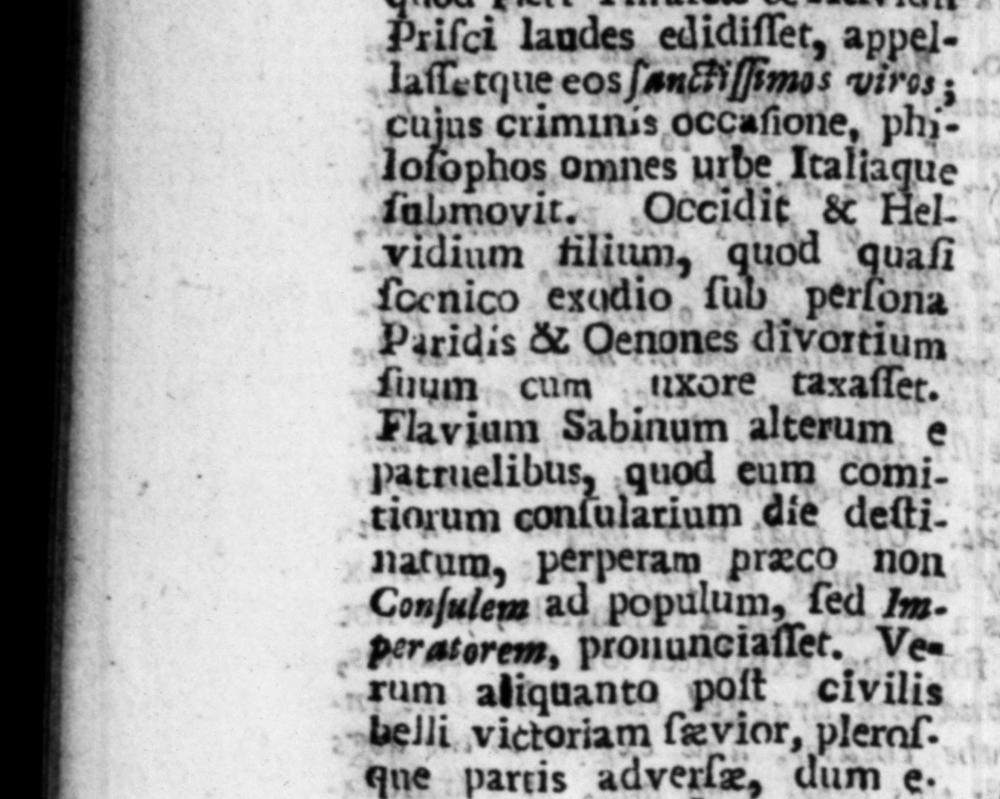

J * 355 CC E8UET. TRA NQ; num Orſitum, Acilium Glabrionem exſilio, quaſi molito- | res novarum rerum. Czreros © . - Teviffinia quemque de cauſſa: , "Flium Lamiam, ob fuſpicio- \ end 2 10s quidem, verum & veteres ken his wife from him he ve} & Innoxios Jocos : quod poſt + I hold my tongue. And when Tits abductam uxorem laudanti vo- adviſed him to take another wife, be cem fuam, Hen tater; dixerat: anſwered him thus, What, have you-a quodque Tito hortaftti fe ad denim marrimonium reſhon. 27 for heping the of bis un: derat, wh. * ov aj. ble Otho 55 Met ius PompoNe v. franus, becauſe he was commonly reported Se. um Coccefanum, 0 bave ay imperial nativity, and to quod Othonis Im e carry about with hum 4 m t tui ſui diem natalem celebra- lid en perchment, and the hes hes ,verat : Metium Pompolia- Fings an generals extracted u num, quod habere . T. Livius, and for giving his. ſlaves the riam geneſim — — names of Mago and Abba. Salluſ2, & quod depictum orbem ter. if Lucullus levetenant of Britain for ( re in membrana, . concionel- | ſuffering ſome lances of a nem invenwe — 2. — to be called Lucellaan. unis RuN ius for ng 4 treatiſe in prai l wr; ms rey Aube indidifier,” Salluſ . Annibalis indidiſſet. ul⸗ 17 rake. . rium Luculln Bricannic le to. aog tens cpa OPTING 08. Zatum, quod Hun nove phlüsſephers from the City and Italy too. TT i thoſe pu to doh, Fund ts nod Pzci Thraſez K Helvidiz.. , 1 3*Pefing in 4 farce. prepared Þriſci lagdes_edidiflet, appellaſſerque eos ſaniFiſſimos wires ; cujus criminss oCcaſione, phz| lolbphos omnes urbe Italiaque ſubmovit. Occidit & Hel. I . — — ö uod quaſi denico exqdio tub perlona but emperor, But gromi il more Paridis & Qenones divortium . bis N > 75 civil mum cum .uxore taxaſſet. g ſed his utmoſt indu to Flavium Sabinum alterum @ the adverſe party that — quod eum comitiaqrum conſularium die deſti- hm with a new invented torture, by natum, perperam præco non puteint their privy parts, and Cuſalcas ad populum, fed In. fg ing fre 2 er pri et. beratorem, prouunciaſſet. Ve- certain only two of any note were parrum aliquanto poſt civilis doned, 4 laticlavian tribune, and 4 belli victoriam ſæv ior, pleraſ- centurion, who to clear themſelves from que partis adverlz, dum e . the charge of being concerned in that tiam latentes — inveſti. Affair, d themſelyes to have been - RNS: NOV : QqUERIIONS gencre ... ou of ot tution, and therefore ſuch diſtorſit.: immiſlo per obſcæna 22 . 0 ſway at all with. eiigne, nonnullis & manus am- ther general or ſoldiers. | | 2 Satiſque conſtat duos ſolos e not ioribus venia donatos, triunum larielavinm & centurionem : qui ſe, quo facilius ex pertes culpæ aſtenderent, umpudicos probaverant, & ob id neque apud ducem, nec apud milites, ullius momenti eſſe potyiſle, 15. Ws
